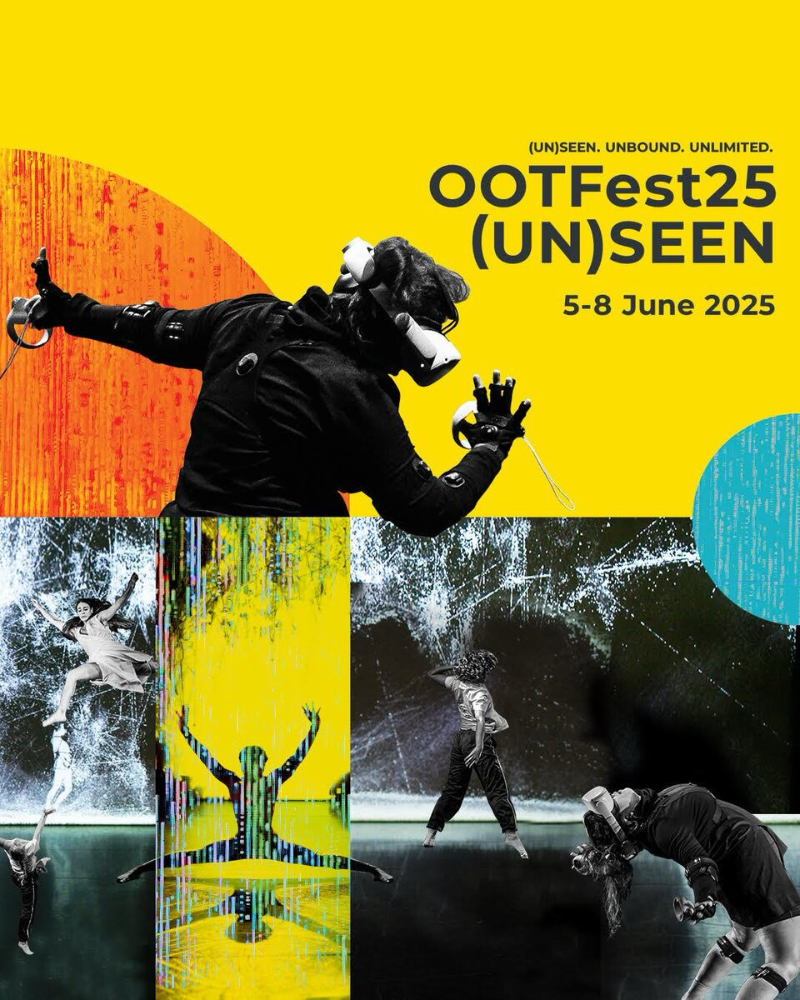
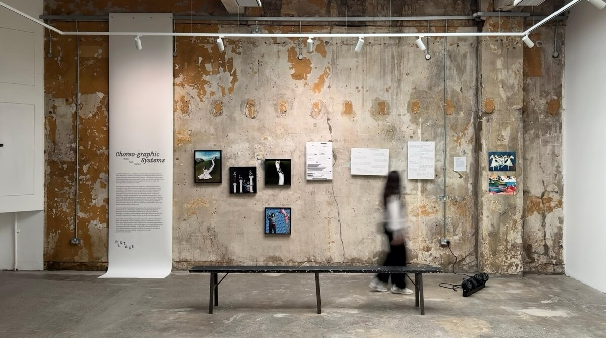
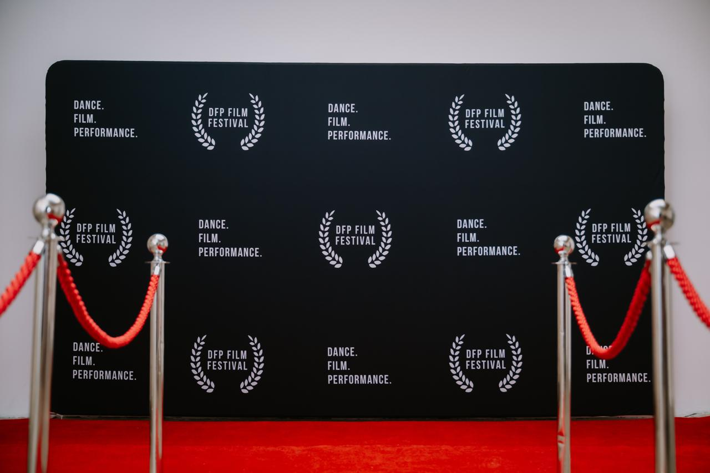
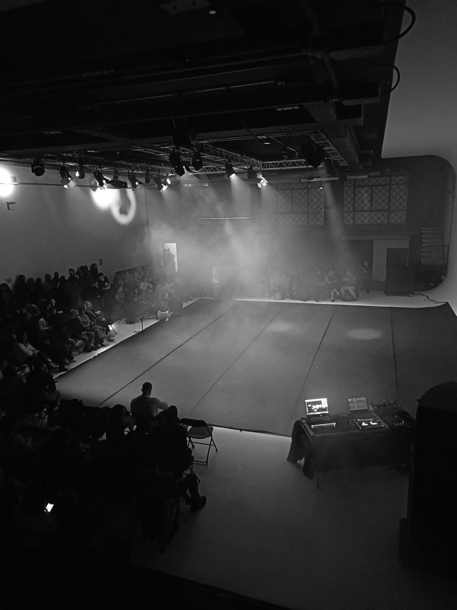
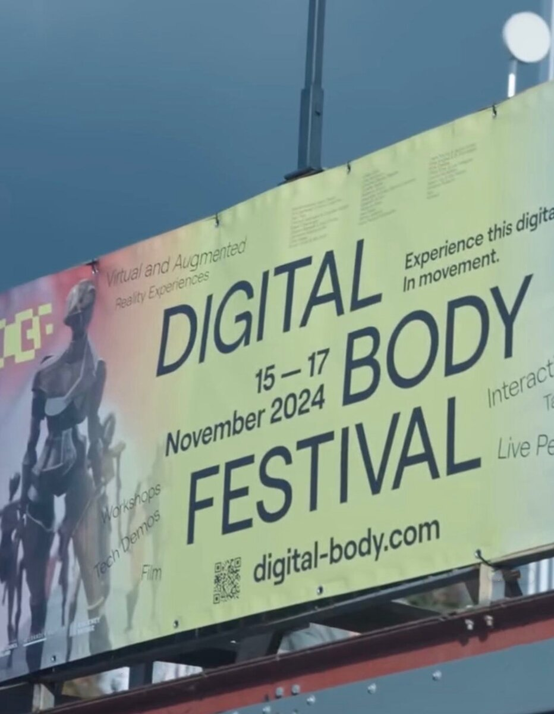

OOTFest25 (UN)SEEN
IJAD Dance Company · Assistant to Event Manager · 2025
Practice archive
End-to-end production across exhibitions, festivals, live performance, and immersive programmes—from early planning and artist liaison to installation and public delivery.

R.E.S.T.A.G.E Collective · Founder, Creative Producer & Curator · 2026

Dance. Film. Performance · Production Coordinator · London

Various London venues · Freelance Production Coordinator

Alexander Whitley Dance Company · Production Assistant · 2024

IJAD Dance Company · Assistant to Event Manager · 2025